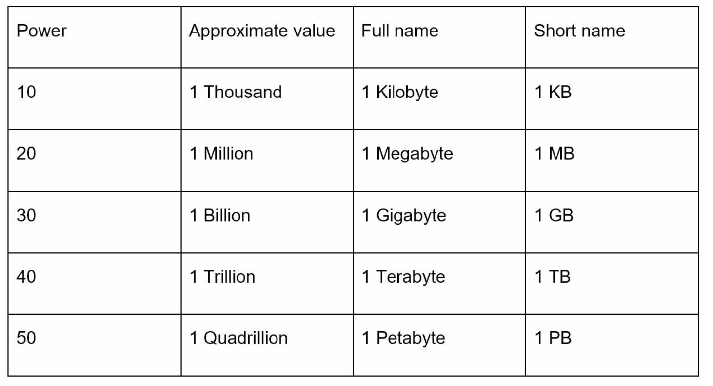

Back-of-the-Envelope Estimation
Napkin math jo interview mein design ko justify karta hai: power of two, latency numbers, nines of availability aur QPS/storage ka formula.
Introduction: estimation kyun?
Back-of-the-envelope estimation matlab napkin pe quick, rough calculation — "kya ye design scale requirement meet karega?" Jeff Dean (Google Senior Fellow) ke words mein ye thought experiments aur common performance numbers ka use karke design ko evaluate karna hai. Interviewer exact number nahi dekh raha — wo dekh raha hai ki tum assumptions → formula → order of magnitude clearly nikal sakte ho, aur us number se design decision lete ho (kitne servers, kitna cache, SQL ya NoSQL, sharding chahiye ya nahi).
Power of Two
Distributed systems mein data volume bahut bada ho jata hai, lekin calculation basic hi rehti hai. Ek byte = 8 bits; ASCII character = 1 byte. Units yaad rakho:

Latency Numbers Every Programmer Should Know
Ye numbers (notes ka 2020 version) relative speed ka sense dete hain — exact value nahi, order of magnitude yaad rakho:
| Operation | Latency | Kya samjhein |
|---|---|---|
| L1 cache access | 0.5 ns | CPU ke andar, sabse fast |
| L2 cache access | 7 ns | L1 se ~14x slow |
| Main memory access | 100 ns | RAM — Redis/in-process cache yahan rehta hai |
| SSD random read | 150 µs | RAM se ~1500x slow |
| Round-trip within same data center | 500 µs | Service-to-service call ka floor ~0.5 ms |
| HDD random seek | 10 ms | Disk seek bahut mehenga — sequential I/O prefer karo |
| Inter-region (e.g. US ↔ Europe) round trip | 150 ms | Cross-region sync replication har write ko slow karega |
Insights
- Memory fast, disk slow. Hot data RAM/cache mein rakho.
- Disk seeks avoid karo — isliye Kafka, Cassandra (LSM tree / commit log) sequential appends karte hain.
- Simple compression algorithms fast hote hain — internet pe bhejne se pehle compress karo.
- Data centers aam taur pe alag regions mein hote hain, aur unke beech data bhejne mein time lagta hai.
Availability Numbers
High availability = system kitni der continuously operational rehta hai, percentage mein. 100% matlab zero downtime; zyada tar services 99%–100% ke beech. SLA (Service Level Agreement) provider aur customer ke beech uptime ka formal promise hai. Amazon, Google, Microsoft apne cloud SLAs 99.9% ya usse upar rakhte hain.
| Availability | Naam | Downtime / year (approx) |
|---|---|---|
| 99% | Two nines | ~3.65 days |
| 99.9% | Three nines | ~8.8 hours |
| 99.99% | Four nines | ~52 minutes |
| 99.999% | Five nines | ~5.3 minutes |
| 99.9999% | Six nines | ~31.56 seconds |
Example: Twitter QPS aur storage estimate
Note: ye numbers sirf exercise ke liye hain, Twitter ke real numbers nahi.
Assumptions (pehle likho!)
- 300 million MAU
- 50% users daily use karte hain → DAU
- Average user 2 tweets/day post karta hai
- 10% tweets mein media hai
- Data 5 saal store hota hai
QPS
DAU = 300M × 50% = 150M
Tweets QPS = 150M × 2 / 24 hr / 3600 s ≈ 3,500
Peak QPS = 2 × QPS ≈ 7,000Tip: ek din mein ~86,400 seconds hote hain — round karke ~105 le lo. To 300M/day ÷ 105 ≈ 3,000/s. Mental math 5 second mein.
Media storage
Average tweet size:
tweet_id 64 bytes
text 140 bytes
media 1 MB
Media storage/day = 150M × 2 × 10% × 1 MB = 30 TB/day
5-year storage = 30 TB × 365 × 5 ≈ 55 PBIs number se design decision nikalta hai: 55 PB ek DB mein nahi jaayega → object storage (S3 jaisa, Chapter 24) media ke liye, aur metadata alag DB mein. Text+id per tweet ~200 bytes hai: 300M tweets/day × 200B ≈ 60 GB/day — metadata manageable hai.
Tips for effective estimation
- Rounding & approximation: "99987 / 9.1" ko "100,000 / 10 = 10,000" bana do. Precision nahi, process matter karta hai.
- Assumptions likh lo — baad mein refer karne aur interviewer ko dikhane ke liye.
- Units label karo: "5" ka matlab 5 KB hai ya 5 MB? Hamesha "5 MB" likho.
- Common estimates practice karo: QPS, peak QPS, storage, cache size, number of servers.
Ek generic template
1. DAU = MAU × daily%
2. Write QPS = DAU × writes_per_user / 10^5
3. Read QPS = DAU × reads_per_user / 10^5
4. Peak = 2–3 × average
5. Storage/day = writes/day × object_size
6. Total storage = storage/day × 365 × years (× replication factor, e.g. 3)
7. Cache (80/20 rule) = 20% × daily read data
8. Servers = peak QPS / QPS_per_server (e.g. ~ a few thousand per app server, assume & state)Common follow-up questions
Peak QPS 2x hi kyun?
Ye ek common assumption hai. Real traffic diurnal hota hai; events (cricket match, sale) mein 5–10x bhi ho sakta hai. Interviewer se confirm karo ya bolo "assume 2x, flash sale ho to queue/autoscale".
Replication factor storage mein jodna chahiye?
Haan — 3 replicas to raw storage 3x. Erasure coding (Chapter 24) se overhead ~1.5x tak aa sakta hai.
Cache size kaise nikalein?
80/20 rule: 20% data 80% traffic serve karta hai. Daily read volume ka 20% cache karo, phir check karo kitne Redis nodes (e.g. ~100 GB per node assumption) lagenge.
Key Takeaways
- 210/220/230/240/250 = KB/MB/GB/TB/PB — har step 1000x.
- Memory ~100ns, SSD ~150µs, DC round-trip ~0.5ms, HDD seek ~10ms, cross-region ~150ms.
- Nines: 99.9% ≈ 8.8 h/year, 99.99% ≈ 52 min/year downtime.
- 1 din ≈ 105 seconds — QPS mental math ka shortcut.
- Assumptions likho, units likho, round karo — aur har number se ek design decision nikaalo.